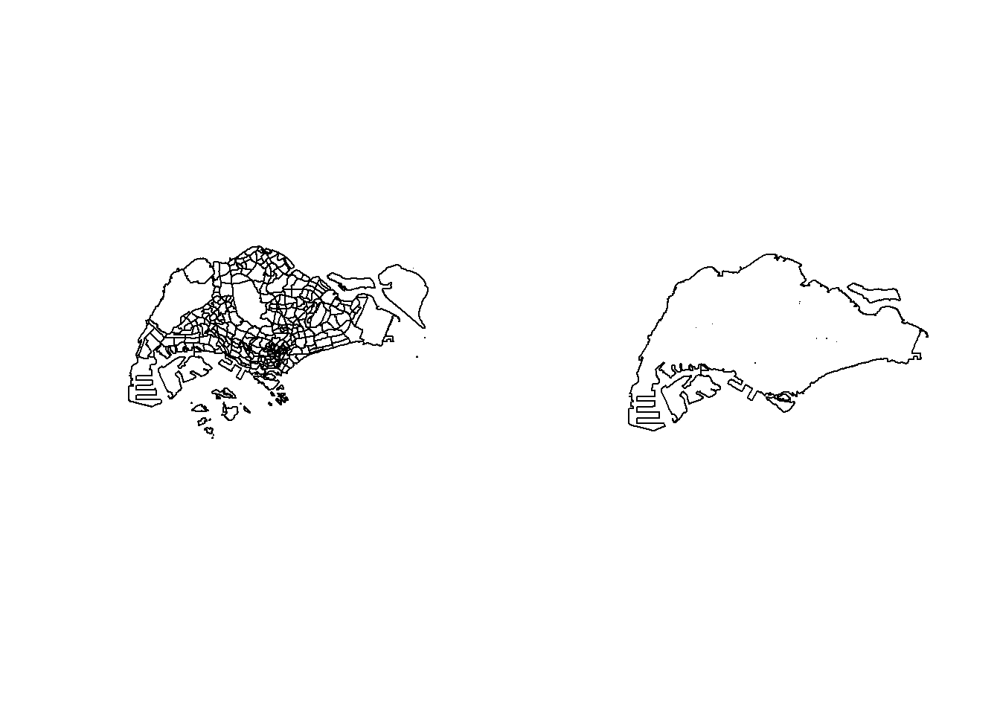

pacman::p_load(arrow, lubridate, tidyverse, sf, tmap, maptools, spatstat)Take-Home Exercise 1
1.0 Overview
Human mobility, the movement of human beings in space and time, reflects the spatial-temporal characteristics of human behavior. With the advancement Information and Communication Technologies (ICT) especially smart phone, a large volume of data related to human mobility have been collected. By using appropriate GIS analysis methods, these data are potentially useful in supporting smart city planning and management.
In Singapore, one of the important source of data related to human mobility is from Land Transport Authority (LTA) DataMall. Two data sets related to human mobility are provided by the portal, they are: Passenger Volume by Origin Destination Train Stations and Passenger Volume by Origin Destination Bus Stops. One of the limitation of these data sets is that their location are biased to either bus stops or MRT/LRT stations. In 2020, another very interesting human mobility data set called Grab Posisi was released by GRAB, one of the largest shared taxi operator in South-east Asia. There are two data sets been released and one of them is for Singapore
1.1 Objectives
The tasks of this take-home exercise are as follows:
- Using appropriate function of sf and tidyverse, preparing the following geospatial data layer in sf tibble data.frames:
- Grab taxi location points either by origins or destinations.
- Road layer within Singapore excluding outer islands.
- Singapore boundary layer excluding outer islands
- Using the extracted data, derive traditional Kernel Density Estimation layers.
- Using the extracted data, derive either Network Kernel Density Estimation (NKDE) or Temporal Network Kernel Density Estimation (TNKDE)
- Using appropriate tmap functions, display the kernel density layers on openstreetmap of Singapore.
- Describe the spatial patterns revealed by the kernel density maps.
2.0 Setup
2.1 Installing packages
3.0 Data Wrangling
3.1 Importing data
grabp <- open_dataset("data/aspatial/GrabPosisi/") %>%
as.data.frame()
mpsz <- st_read("data/geospatial/MasterPlan2019SubzoneBoundaryNoSeaGEOJSON.geojson")Reading layer `MasterPlan2019SubzoneBoundaryNoSeaGEOJSON' from data source
`C:\chesterchia\IS415-GAA\Take-home_Ex\Take-home_Ex01\data\geospatial\MasterPlan2019SubzoneBoundaryNoSeaGEOJSON.geojson'
using driver `GeoJSON'
Simple feature collection with 332 features and 2 fields
Geometry type: MULTIPOLYGON
Dimension: XY, XYZ
Bounding box: xmin: 103.6057 ymin: 1.158699 xmax: 104.0885 ymax: 1.470775
z_range: zmin: 0 zmax: 0
Geodetic CRS: WGS 84osm <- st_read("data/geospatial/malaysia-singapore-brunei-latest-free.shp", layer="gis_osm_roads_free_1")Reading layer `gis_osm_roads_free_1' from data source
`C:\chesterchia\IS415-GAA\Take-home_Ex\Take-home_Ex01\data\geospatial\malaysia-singapore-brunei-latest-free.shp'
using driver `ESRI Shapefile'
Simple feature collection with 1765176 features and 10 fields
Geometry type: LINESTRING
Dimension: XY
Bounding box: xmin: 99.66041 ymin: 0.8021131 xmax: 119.2601 ymax: 7.514393
Geodetic CRS: WGS 843.2 Pre-processing
grabp$pingtimestamp <- as_datetime(grabp$pingtimestamp)origin_df <- grabp %>%
group_by(trj_id) %>%
arrange(pingtimestamp) %>%
filter(row_number()==1) %>%
mutate(weekday = wday(pingtimestamp,
label=TRUE,
abbr=TRUE),
start_hr = factor(hour(pingtimestamp)),
day = factor(mday(pingtimestamp))) %>%
st_as_sf(coords = c("rawlng", "rawlat"),
crs = 4326) %>%
st_transform(crs = 3414)
destination_df <- grabp %>%
group_by(trj_id) %>%
arrange(desc(pingtimestamp)) %>%
filter(row_number()==1) %>%
mutate(weekday = wday(pingtimestamp,
label=TRUE,
abbr=TRUE),
end_hr = factor(hour(pingtimestamp)),
day = factor(mday(pingtimestamp))) %>%
st_as_sf(coords = c("rawlng", "rawlat"),
crs = 4326) %>%
st_transform(crs = 3414)
head(origin_df)Simple feature collection with 6 features and 10 fields
Geometry type: POINT
Dimension: XY
Bounding box: xmin: 17201.85 ymin: 29236.55 xmax: 31518.05 ymax: 47967.97
Projected CRS: SVY21 / Singapore TM
# A tibble: 6 × 11
# Groups: trj_id [6]
trj_id driving_mode osname pingtimestamp speed bearing accuracy weekday
<chr> <chr> <chr> <dttm> <dbl> <int> <dbl> <ord>
1 70895 car andro… 2019-04-08 00:09:26 9.95 111 4 Mon
2 21926 car andro… 2019-04-08 00:09:48 11.0 75 4 Mon
3 47498 car ios 2019-04-08 00:09:50 18.6 307 8 Mon
4 18103 car andro… 2019-04-08 00:09:55 0.404 159 3 Mon
5 41322 car andro… 2019-04-08 00:09:57 17.9 232 3.9 Mon
6 64813 car ios 2019-04-08 00:10:03 17.1 106 10 Mon
# ℹ 3 more variables: start_hr <fct>, day <fct>, geometry <POINT [m]>head(destination_df)Simple feature collection with 6 features and 10 fields
Geometry type: POINT
Dimension: XY
Bounding box: xmin: 14101.2 ymin: 33097.49 xmax: 44192.98 ymax: 46866.96
Projected CRS: SVY21 / Singapore TM
# A tibble: 6 × 11
# Groups: trj_id [6]
trj_id driving_mode osname pingtimestamp speed bearing accuracy weekday
<chr> <chr> <chr> <dttm> <dbl> <int> <dbl> <ord>
1 81574 car ios 2019-04-21 23:56:49 15.3 103 8 Sun
2 54687 car android 2019-04-21 23:56:46 8.15 299 4.55 Sun
3 17190 car android 2019-04-21 23:56:36 12.4 202 4 Sun
4 13793 car android 2019-04-21 23:56:30 6.47 170 3.9 Sun
5 39014 car ios 2019-04-21 23:56:27 3.59 169 4 Sun
6 41170 car ios 2019-04-21 23:56:13 13.1 71 5 Sun
# ℹ 3 more variables: end_hr <fct>, day <fct>, geometry <POINT [m]>origin_df <- origin_df %>% dplyr::select('trj_id', 'pingtimestamp', 'geometry', 'weekday', 'start_hr', 'day', 'geometry')
destination_df <- destination_df %>% dplyr::select('trj_id', 'pingtimestamp', 'geometry', 'weekday', 'end_hr', 'day', 'geometry')write_rds(origin_df, "data/rds/origin.rds")
write_rds(destination_df, "data/rds/destination.rds")destination_df <- read_rds("data/rds/destination.rds")
origin_df <- read_rds("data/rds/origin.rds")head(osm)Simple feature collection with 6 features and 10 fields
Geometry type: LINESTRING
Dimension: XY
Bounding box: xmin: 101.7033 ymin: 1.305992 xmax: 103.8301 ymax: 3.147986
Geodetic CRS: WGS 84
osm_id code fclass name ref oneway maxspeed layer
1 4386520 5113 primary Orchard Road <NA> F 50 0
2 4578273 5114 secondary Jalan Bukit Bintang <NA> F 0 0
3 4579495 5122 residential Jalan Nagasari <NA> B 0 0
4 4579533 5122 residential Persiaran Raja Chulan <NA> B 0 0
5 4579534 5122 residential Jalan Ceylon <NA> B 0 0
6 4579536 5122 residential Changkat Bukit Bintang <NA> F 0 0
bridge tunnel geometry
1 F F LINESTRING (103.8301 1.3060...
2 F F LINESTRING (101.7226 3.1478...
3 F F LINESTRING (101.7084 3.1473...
4 F F LINESTRING (101.7043 3.1468...
5 F F LINESTRING (101.7033 3.1476...
6 F F LINESTRING (101.7088 3.1470...length(which(st_is_valid(mpsz) == FALSE))[1] 6mpsz[which(st_is_valid(mpsz) == FALSE), ]Simple feature collection with 6 features and 2 fields
Geometry type: MULTIPOLYGON
Dimension: XY, XYZ
Bounding box: xmin: 103.7098 ymin: 1.212326 xmax: 104.0885 ymax: 1.440698
z_range: zmin: 0 zmax: 0
Geodetic CRS: WGS 84
Name
30 kml_30
31 kml_31
35 kml_35
59 kml_59
109 kml_109
318 kml_318
Description
30 <center><table><tr><th colspan='2' align='center'><em>Attributes</em></th></tr><tr bgcolor="#E3E3F3"> <th>SUBZONE_NO</th> <td>2</td> </tr><tr bgcolor=""> <th>SUBZONE_N</th> <td>SOUTHERN GROUP</td> </tr><tr bgcolor="#E3E3F3"> <th>SUBZONE_C</th> <td>SISZ02</td> </tr><tr bgcolor=""> <th>CA_IND</th> <td>N</td> </tr><tr bgcolor="#E3E3F3"> <th>PLN_AREA_N</th> <td>SOUTHERN ISLANDS</td> </tr><tr bgcolor=""> <th>PLN_AREA_C</th> <td>SI</td> </tr><tr bgcolor="#E3E3F3"> <th>REGION_N</th> <td>CENTRAL REGION</td> </tr><tr bgcolor=""> <th>REGION_C</th> <td>CR</td> </tr><tr bgcolor="#E3E3F3"> <th>INC_CRC</th> <td>69E4DC0E948CA0EA</td> </tr><tr bgcolor=""> <th>FMEL_UPD_D</th> <td>20191223152313</td> </tr></table></center>
31 <center><table><tr><th colspan='2' align='center'><em>Attributes</em></th></tr><tr bgcolor="#E3E3F3"> <th>SUBZONE_NO</th> <td>1</td> </tr><tr bgcolor=""> <th>SUBZONE_N</th> <td>SENTOSA</td> </tr><tr bgcolor="#E3E3F3"> <th>SUBZONE_C</th> <td>SISZ01</td> </tr><tr bgcolor=""> <th>CA_IND</th> <td>N</td> </tr><tr bgcolor="#E3E3F3"> <th>PLN_AREA_N</th> <td>SOUTHERN ISLANDS</td> </tr><tr bgcolor=""> <th>PLN_AREA_C</th> <td>SI</td> </tr><tr bgcolor="#E3E3F3"> <th>REGION_N</th> <td>CENTRAL REGION</td> </tr><tr bgcolor=""> <th>REGION_C</th> <td>CR</td> </tr><tr bgcolor="#E3E3F3"> <th>INC_CRC</th> <td>BF42BFC834B5C379</td> </tr><tr bgcolor=""> <th>FMEL_UPD_D</th> <td>20191223152313</td> </tr></table></center>
35 <center><table><tr><th colspan='2' align='center'><em>Attributes</em></th></tr><tr bgcolor="#E3E3F3"> <th>SUBZONE_NO</th> <td>1</td> </tr><tr bgcolor=""> <th>SUBZONE_N</th> <td>MARITIME SQUARE</td> </tr><tr bgcolor="#E3E3F3"> <th>SUBZONE_C</th> <td>BMSZ01</td> </tr><tr bgcolor=""> <th>CA_IND</th> <td>N</td> </tr><tr bgcolor="#E3E3F3"> <th>PLN_AREA_N</th> <td>BUKIT MERAH</td> </tr><tr bgcolor=""> <th>PLN_AREA_C</th> <td>BM</td> </tr><tr bgcolor="#E3E3F3"> <th>REGION_N</th> <td>CENTRAL REGION</td> </tr><tr bgcolor=""> <th>REGION_C</th> <td>CR</td> </tr><tr bgcolor="#E3E3F3"> <th>INC_CRC</th> <td>97D628BCCCE96805</td> </tr><tr bgcolor=""> <th>FMEL_UPD_D</th> <td>20191223152313</td> </tr></table></center>
59 <center><table><tr><th colspan='2' align='center'><em>Attributes</em></th></tr><tr bgcolor="#E3E3F3"> <th>SUBZONE_NO</th> <td>7</td> </tr><tr bgcolor=""> <th>SUBZONE_N</th> <td>SIGLAP</td> </tr><tr bgcolor="#E3E3F3"> <th>SUBZONE_C</th> <td>BDSZ07</td> </tr><tr bgcolor=""> <th>CA_IND</th> <td>N</td> </tr><tr bgcolor="#E3E3F3"> <th>PLN_AREA_N</th> <td>BEDOK</td> </tr><tr bgcolor=""> <th>PLN_AREA_C</th> <td>BD</td> </tr><tr bgcolor="#E3E3F3"> <th>REGION_N</th> <td>EAST REGION</td> </tr><tr bgcolor=""> <th>REGION_C</th> <td>ER</td> </tr><tr bgcolor="#E3E3F3"> <th>INC_CRC</th> <td>B942232EDE4E5370</td> </tr><tr bgcolor=""> <th>FMEL_UPD_D</th> <td>20191223152313</td> </tr></table></center>
109 <center><table><tr><th colspan='2' align='center'><em>Attributes</em></th></tr><tr bgcolor="#E3E3F3"> <th>SUBZONE_NO</th> <td>10</td> </tr><tr bgcolor=""> <th>SUBZONE_N</th> <td>JURONG PORT</td> </tr><tr bgcolor="#E3E3F3"> <th>SUBZONE_C</th> <td>JESZ10</td> </tr><tr bgcolor=""> <th>CA_IND</th> <td>N</td> </tr><tr bgcolor="#E3E3F3"> <th>PLN_AREA_N</th> <td>JURONG EAST</td> </tr><tr bgcolor=""> <th>PLN_AREA_C</th> <td>JE</td> </tr><tr bgcolor="#E3E3F3"> <th>REGION_N</th> <td>WEST REGION</td> </tr><tr bgcolor=""> <th>REGION_C</th> <td>WR</td> </tr><tr bgcolor="#E3E3F3"> <th>INC_CRC</th> <td>DE335124035E97E8</td> </tr><tr bgcolor=""> <th>FMEL_UPD_D</th> <td>20191223152313</td> </tr></table></center>
318 <center><table><tr><th colspan='2' align='center'><em>Attributes</em></th></tr><tr bgcolor="#E3E3F3"> <th>SUBZONE_NO</th> <td>1</td> </tr><tr bgcolor=""> <th>SUBZONE_N</th> <td>NORTH-EASTERN ISLANDS</td> </tr><tr bgcolor="#E3E3F3"> <th>SUBZONE_C</th> <td>NESZ01</td> </tr><tr bgcolor=""> <th>CA_IND</th> <td>N</td> </tr><tr bgcolor="#E3E3F3"> <th>PLN_AREA_N</th> <td>NORTH-EASTERN ISLANDS</td> </tr><tr bgcolor=""> <th>PLN_AREA_C</th> <td>NE</td> </tr><tr bgcolor="#E3E3F3"> <th>REGION_N</th> <td>NORTH-EAST REGION</td> </tr><tr bgcolor=""> <th>REGION_C</th> <td>NER</td> </tr><tr bgcolor="#E3E3F3"> <th>INC_CRC</th> <td>712324C94CA834E8</td> </tr><tr bgcolor=""> <th>FMEL_UPD_D</th> <td>20191223152313</td> </tr></table></center>
geometry
30 MULTIPOLYGON (((103.8591 1....
31 MULTIPOLYGON (((103.8232 1....
35 MULTIPOLYGON Z (((103.8236 ...
59 MULTIPOLYGON Z (((103.9321 ...
109 MULTIPOLYGON (((103.7119 1....
318 MULTIPOLYGON (((104.0541 1....mpsz <- st_make_valid(mpsz)
mpsz <- st_zm(mpsz)3.3 CRS Adjustments
st_crs(mpsz)Coordinate Reference System:
User input: WGS 84
wkt:
GEOGCRS["WGS 84",
DATUM["World Geodetic System 1984",
ELLIPSOID["WGS 84",6378137,298.257223563,
LENGTHUNIT["metre",1]]],
PRIMEM["Greenwich",0,
ANGLEUNIT["degree",0.0174532925199433]],
CS[ellipsoidal,2],
AXIS["geodetic latitude (Lat)",north,
ORDER[1],
ANGLEUNIT["degree",0.0174532925199433]],
AXIS["geodetic longitude (Lon)",east,
ORDER[2],
ANGLEUNIT["degree",0.0174532925199433]],
ID["EPSG",4326]]st_crs(osm)Coordinate Reference System:
User input: WGS 84
wkt:
GEOGCRS["WGS 84",
DATUM["World Geodetic System 1984",
ELLIPSOID["WGS 84",6378137,298.257223563,
LENGTHUNIT["metre",1]]],
PRIMEM["Greenwich",0,
ANGLEUNIT["degree",0.0174532925199433]],
CS[ellipsoidal,2],
AXIS["latitude",north,
ORDER[1],
ANGLEUNIT["degree",0.0174532925199433]],
AXIS["longitude",east,
ORDER[2],
ANGLEUNIT["degree",0.0174532925199433]],
ID["EPSG",4326]]osm <- st_transform(osm, crs = 3414)mpsz <- st_transform(mpsz, crs = 3414)st_crs(mpsz)Coordinate Reference System:
User input: EPSG:3414
wkt:
PROJCRS["SVY21 / Singapore TM",
BASEGEOGCRS["SVY21",
DATUM["SVY21",
ELLIPSOID["WGS 84",6378137,298.257223563,
LENGTHUNIT["metre",1]]],
PRIMEM["Greenwich",0,
ANGLEUNIT["degree",0.0174532925199433]],
ID["EPSG",4757]],
CONVERSION["Singapore Transverse Mercator",
METHOD["Transverse Mercator",
ID["EPSG",9807]],
PARAMETER["Latitude of natural origin",1.36666666666667,
ANGLEUNIT["degree",0.0174532925199433],
ID["EPSG",8801]],
PARAMETER["Longitude of natural origin",103.833333333333,
ANGLEUNIT["degree",0.0174532925199433],
ID["EPSG",8802]],
PARAMETER["Scale factor at natural origin",1,
SCALEUNIT["unity",1],
ID["EPSG",8805]],
PARAMETER["False easting",28001.642,
LENGTHUNIT["metre",1],
ID["EPSG",8806]],
PARAMETER["False northing",38744.572,
LENGTHUNIT["metre",1],
ID["EPSG",8807]]],
CS[Cartesian,2],
AXIS["northing (N)",north,
ORDER[1],
LENGTHUNIT["metre",1]],
AXIS["easting (E)",east,
ORDER[2],
LENGTHUNIT["metre",1]],
USAGE[
SCOPE["Cadastre, engineering survey, topographic mapping."],
AREA["Singapore - onshore and offshore."],
BBOX[1.13,103.59,1.47,104.07]],
ID["EPSG",3414]]st_crs(osm)Coordinate Reference System:
User input: EPSG:3414
wkt:
PROJCRS["SVY21 / Singapore TM",
BASEGEOGCRS["SVY21",
DATUM["SVY21",
ELLIPSOID["WGS 84",6378137,298.257223563,
LENGTHUNIT["metre",1]]],
PRIMEM["Greenwich",0,
ANGLEUNIT["degree",0.0174532925199433]],
ID["EPSG",4757]],
CONVERSION["Singapore Transverse Mercator",
METHOD["Transverse Mercator",
ID["EPSG",9807]],
PARAMETER["Latitude of natural origin",1.36666666666667,
ANGLEUNIT["degree",0.0174532925199433],
ID["EPSG",8801]],
PARAMETER["Longitude of natural origin",103.833333333333,
ANGLEUNIT["degree",0.0174532925199433],
ID["EPSG",8802]],
PARAMETER["Scale factor at natural origin",1,
SCALEUNIT["unity",1],
ID["EPSG",8805]],
PARAMETER["False easting",28001.642,
LENGTHUNIT["metre",1],
ID["EPSG",8806]],
PARAMETER["False northing",38744.572,
LENGTHUNIT["metre",1],
ID["EPSG",8807]]],
CS[Cartesian,2],
AXIS["northing (N)",north,
ORDER[1],
LENGTHUNIT["metre",1]],
AXIS["easting (E)",east,
ORDER[2],
LENGTHUNIT["metre",1]],
USAGE[
SCOPE["Cadastre, engineering survey, topographic mapping."],
AREA["Singapore - onshore and offshore."],
BBOX[1.13,103.59,1.47,104.07]],
ID["EPSG",3414]]osm <- osm %>%
dplyr::select('osm_id', 'fclass')plot(st_geometry(mpsz))
merged_sg <- st_union(mpsz) %>%
st_cast("POLYGON")
merged_sg <- merged_sg[c(10, 45)]
merged_sg <- st_as_sf(merged_sg)
par(mfrow=c(1,2))
plot(st_geometry(mpsz))
plot(st_geometry(merged_sg))
write_rds(merged_sg, "data/rds/merged_sg.rds")merged_sg <- read_rds("data/rds/merged_sg.rds")merged_st <- as_Spatial(merged_sg)
merged_sg_sp <- as(merged_st, "SpatialPolygons")
merged_sg_owin <- as(merged_sg_sp, "owin")
write_rds(merged_sg_owin, "data/rds/merged_sg_owin.rds")